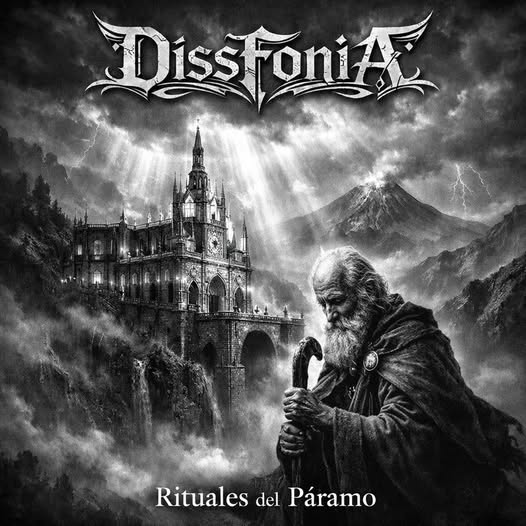

Presentamos este álbum instrumental homenaje a las bandas de metal de Ipiales, por DISSFONIA. Un trabajo nacido desde la admiración y el respeto por quienes construyeron la historia, el sonido y la identidad de nuestra escena, aun cuando durante años se ha intentado ignorarla, minimizarla y dejarla sin espacios ni apoyo.
Mientras algunas administraciones han demostrado desconocimiento y desinterés por el movimiento metalero local, nosotros seguimos firmes. Porque esta historia no empezó en una oficina ni depende de una agenda cultural. Empezó en garajes, en tarimas improvisadas, en la autogestión y en la convicción de quienes nunca dejaron caer la bandera.
Cada tema es una reinterpretación instrumental que honra la esencia de las composiciones originales, manteniendo vivo su espíritu desde nuestra propia fuerza. No es solo música: es resistencia, memoria e identidad.